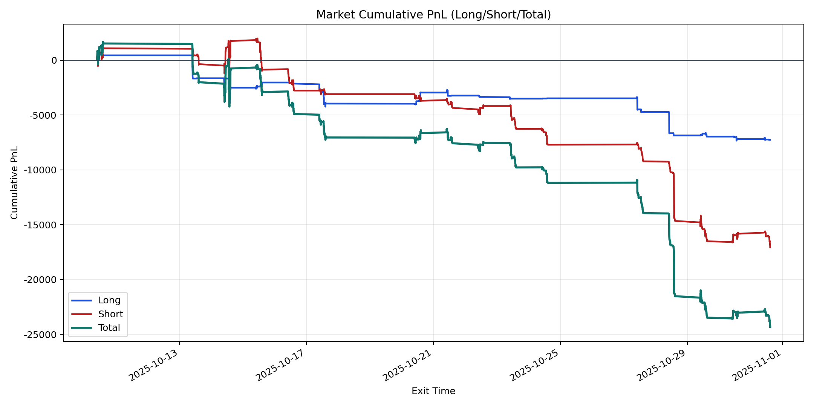
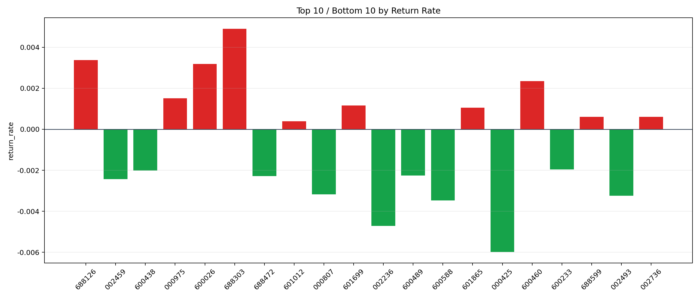

| repo_root | /home/haoranyou/data/output/alpha0.4_1w_5s_3ticks_index_filter/index_weights_300 |
|---|---|
| period_months | 1 |
| period_label | 2025-10-10_to_2025-10-31 |
| start_time | 2025-10-10 09:52:12 |
| end_time | 2025-10-31 14:41:22 |
| n_trades | 2965 |
| n_symbols | 38 |
| total_pnl | -24323.345300000045 |
| long_total_pnl | -7260.63870000001 |
| short_total_pnl | -17062.706600000038 |
| total_entry_notional | 27689028.0 |
| long_entry_notional | 5635536.0 |
| short_entry_notional | 22053492.0 |
| total_return_rate | -0.0008784470621359495 |
| long_return_rate | -0.0012883670160211932 |
| short_return_rate | -0.0007736963651833477 |
| top_symbols_by_return | ["688303", "688126", "600026", "600460", "000975", "601699", "601865", "688599", "002736", "601012"] |
| bottom_symbols_by_return | ["000425", "002236", "600588", "002493", "000807", "002459", "688472", "600489", "600438", "600233"] |

